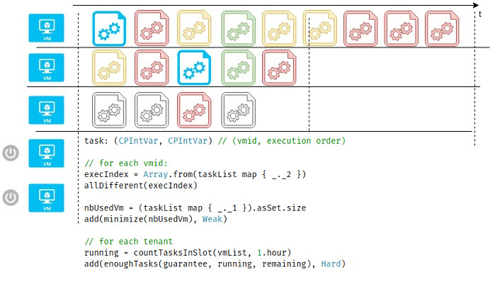

Programmation par contraintes
Introduction
Cyril Delmas
Qui suis-je?
- Senior Backend Engineer @blue_valet
 @cyril_delmas
@cyril_delmas cdelmas
cdelmas

Agenda
- Définitions
- Exemples
- Fonctionnement d'un solveur
- Techniques et patterns
- Questions
Définitions
- Contrainte
- Relation logique entre plusieurs variables
X < Y, allDifferent(array),X + Y + Z² = 45, …
- Variable
- Inconnue (au sens mathématique) pouvant prendre une valeur dans un domaine donné.
X, Y, Z, nbCars, startDate, …
- Domaine
- Ensemble des valeurs que peut prendre une inconnue. Un domaine peut être borné ou non, et discret ou continu.
ℕ, ℤ, {0, 1}, [0, 100]
- Problème de satisfaction de contraintes (CSP)
- Modélisation d'un problème sous la forme d'un triplet:
P = ((V1,..,Vk) ∈ D1×..×Dk, {C1,...,Cn})
- Programmation par contraintes
- Méthode de modélisation et résolution de problèmes combinatoires sous la forme de problèmes de satisfaction de contraintes.
Objectifs
- Trouver une solution
- Trouver toutes les solutions
- Trouver la meilleure solution
- Prouver qu'il n'y a pas de solution
Résoudre un problème de satisfaction de contraintes
=
donner une valeur à chaque inconnue du problème, en respectant les relations logiques.
↓
On obtient une solution.
Evaluation d'une solution
On peut donner un score à une solution, en donnant un ou plusieurs objectifs =
f(V1,..,Vk)
Exemple classique : minimiser un coût
Problème sur-contraint (pas de solution)
On peut relaxer des contraintes
- Suppression
- Hiérarchiser
- Attribuer des poids (~= coût)
- Coefficients aléatoires (fuzzy)

Exemples expliqués
Problème n°1 : Pythagore
Trouver tous les triangles rectangles de côtés entiers et de périmètre inférieur à 200.
Question : combien y-en-a-t-il ?
Solution
Problème n°2 : Pythagore bis
Trouver le triangle rectangle de périmètre inférieur à 200 ayant la plus grande aire.
Solution
On reprend le modèle précédent, et on y ajoute une variable sur laquelle on va calculer un objectif
maximize(area)
Problème n°3 : Xkcd

Solution
- Représenter les prix par des nombres entiers
- Faire une somme pondérée des quantités par le prix
Problème n°4 : Sudoku

Solution
- Chaque case du tableau est une variable, de domaine
{1,2,..,9} - Les cases déjà remplies ont un domaine singleton (de la valeur donnée)
- Les chiffres d'une même colonne sont tous différents
- Les chiffres d'une même ligne sont tous différents
- Les chiffres d'une même région sont tous différents
Problème n°5 : HPC
Résoudre un problème complexe d'assignation de ressources.
Problème n°5 : HPC
On doit traiter des calculs de durées différentes appartenant à différents clients et ayant un délai de rendu
Problème n°5 : HPC
Un nombre maximal de VM (ressources) utilisables (mais moins on en utilise, mieux c'est)
Problème n°5 : HPC
A un instant t, une VM ne peut traiter qu'un seul calcul
Problème n°5 : HPC
Sur une période d'une heure, on doit garantir pour chaque client un nombre minimal de calculs
Problème n°5 : HPC
Au-delà, on accepte les dépassements de délai
Problème n°5 : HPC
Question : comment modéliser le problème ??
Solution
Fonctionnement d'un solveur
Cas des problèmes à variables à domaine fini et discret (problème de satisfaction de contraintes)
Problème : colorer une carte sans que deux pays partageant une frontière aient la même couleur
Recherche systématique
Recherche systématique
Techniques de consistance
Propagation des contraintes
Propagation des contraintes
Ordonnancement du choix des variables
Ordonnancement du choix des valeurs
Algorithmes heuristiques et stochastiques
- Hill-climbing
- Min-conflicts
- Tabu search
- ...
Techniques et patterns
- Quand utiliser la programmation par contraintes ?
-
- Contraintes complexes et nombreuses
- Problèmes avec fonction objective simple
- Problèmes de décisions
- Problèmes issus des domaines où cela fonctionne classiquement
Domaines d'application
- Planning de conférence
- Parcours de livraison
- Assignation de tâches
- Séquençage d'ADN
- Localisation de pannes
- Design de circuits
- Comment faire ?
-
- Identifier les variables du problèmes
- Attribuer un domaine aux variables -> taille du problème
- Etablir la liste des contraintes
- Décomposer en sous-problèmes
- Utiliser un algorithme naïf, mesurer
- Optimiser

Liens utiles
- http://ktiml.mff.cuni.cz/~bartak/constraints/
- les documentations de choco-solver, optaplanner, OscaR, ...
- http://www.hakank.org/constraint_programming_blog/
- https://sofdem.github.io/gccat/gccat/sec5.html
- https://www.ics.uci.edu/~welling/teaching/271fall09/CSP271fall09.pdf
Code promo: BDXIO5
Merci